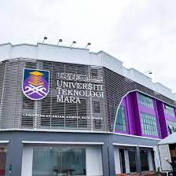

Education
Primary School
Sekolah Kebangsaan Jelawat (2007-2012)
UPSR (3A 2B)
- BAHASA MELAYU (PEMAHAMAN)- A
- BAHASA MELAYU (PENULISAN) - A
- BAHASA INGGERIS - B
- MATEMATICS - A
- SCIENCE - B
Secondary School
Sekolah Menengah Kebangsaan Wangsa Maju Seksyen 2 (2013-2016)
PT3 (3A 5B 2C)
- BAHASA MELAYU (BERTULIS)- A
- BAHASA MELAYU (LISAN) - A
- BAHASA INGGERIS (BERTULIS) - B
- BAHASA INGGERIS (LISAN) - B
- SEJARAH - B
- GEOGRAFI - B
- PENDIDIKAN ISLAM - B
- MATHEMATICS - A
- SCIENCE - C
- KEMAHIRAN HIDUP BERSEPADU (TEKNIKAL) - C
Sekolah Menengah Kebangsaan Sungai Long (2017)
SPM (2A 2B 1C 2D 2E)
- BAHASA MELAYU - A
- BAHASA INGGERIS - B
- SEJARAH - B
- METAMATIK - A
- PENDIDIKAN ISLAM - C
- METAMATIK TAMBAHAN - D
- BIOLOGI - D
- FIZIK - E
- KIMIA - E
Diploma
Kolej Profesional Mara (2019-2020)
CGPA (3.08)
- Semester 1- 3.25
- Semester 2- 3.11
- Semester 3- 2.67
- Semester 4- 2.90
- Semester 5- 2.91
- Semester 6- 3.88
Degree

UITM CAWANGAN KOTA BHARU (2022 - Now)
CGPA (3.62)
- Semester 1- 3.70
- Semester 2- 3.62
- Semester 3- 3.55